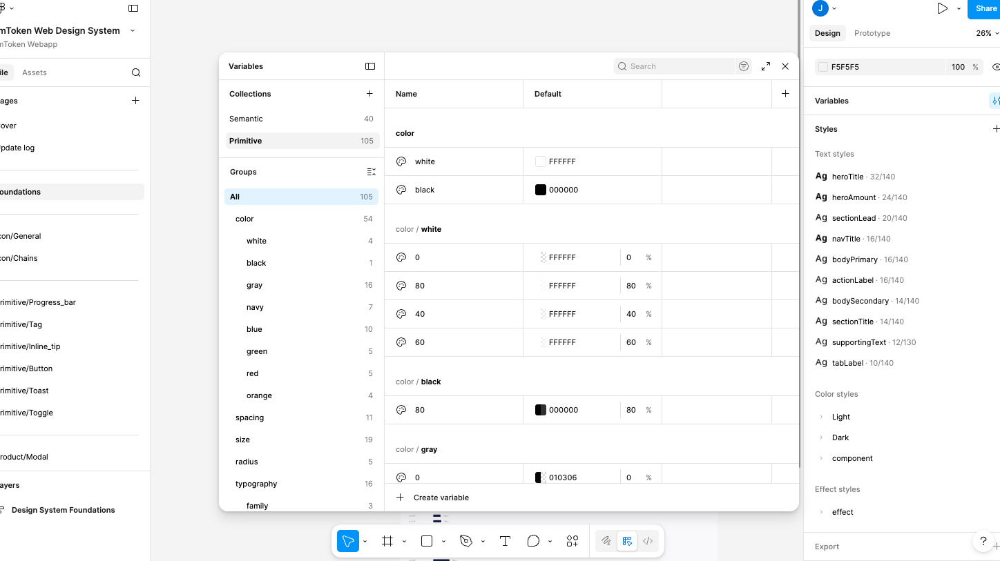
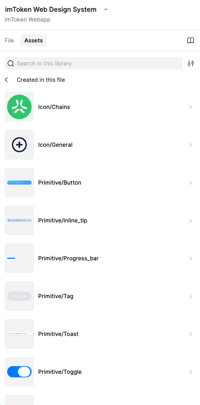

April 2026
A briefing for designers — current state, skills, and working patterns.
Solid foundation. The design system has a core structure and optimized workflow. It is usable today — components are live and functional.


Still expanding. The system is growing toward completeness. New components are being added progressively as needs arise.
Key files — Single Source of Truth
The authoritative source. All token values live here. Everything else derives from or references it.
Describes the design system in natural language. Semantic meaning, usage rules, and component intent.
Explicit component definitions. Added on demand — only when a component's complexity demands it.
The visual canvas. Organized for designers to explore, discuss, and iterate. Reflects the source of truth.
Figma as the discussion canvas — visual, organized, easy to iterate on. Primary working surface.
Source of truth is the design markdown file and token JSON. Components translatable directly to code.
Reads from both surfaces. Component schemas added on demand when complexity requires explicit definition.
AI-native, well-scoped, well-structured.
Purpose-built so that any part of it can be cleanly translated into a structured design markdown file — machine-readable and directly usable for code generation.
Build the system from scratch, from a messy existing one, or from code. Goal: all bindings ready, all semantic meanings scoped — so designers can keep working in Figma.
Produce actual screen designs from the system. Components, variables, and styles should be bound — but cleanup is part of the process.
This skill is never a one-shot task. It requires 20–100+ sequential Figma API calls across five mandatory phases. Skipping or reordering phases causes structural failures that are expensive to undo. Variables always come before components. Every phase ends with a required checkpoint.
What works well. Most generated designs come with components, variables, and styles already bound.
What to watch for. Unbound components and unbound variables still appear — manual cleanup is part of the process.
Figma as canvas. Design markdown + token schema are first-class. Figma DS is second-class.
Designer-heavy. DS must be fully bound. Code generated from schema and Figma map pages.
Two sub-cases: exploration (fast, loose) and active production (strict, bound, markdown-driven).
Figma is a visualization canvas. Design markdown and token schema drive everything. Figma reflects code, not the other way around.
Designer is the primary user. DS must be fully bound at the component level. Code generation pulls from schema and Figma map pages both.
Input is a prompt, a file, or natural language. The agent reads the design files directly and generates code — no Figma step required.